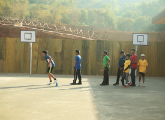

Manovikas English Medium School
By Jaden Ronnan Vaz
.jpg)
Manovikas school map
history behind manovikas
Manovikas Implies Mann KaVikas (Development Of Mind) And This Has Always Been The Central Idea Of The School.
Established in the year 1968, Manovikas School is amongst the most prestigious schools in Goa. Throughout its glorious history of half-a-century, the school has provided the guidance, tools and environment to help thousands of students identify and nurture individual talents and grow up to become caring, responsible and contributing citizens.
Manovikas implies ‘Mann ka Vikas’ (development of the mind), and this has always been the central idea behind the functioning of the school.
In the past 50 years, the school has grown from a single class in a rented house with only two teachers to over 1,900 students, 93 teaching staff, 34 support staff and a sprawling campus measuring 35,000 sqm.
Auditorium
Auditorium is used for school entertament or studies
Transport
Our transport facilities are in line with our all-embracing philosophy. On any given school day, our buses, like clockwork, ply far and wide to pick and drop our students living near and far. Each bus is manned with an attendant-in-charge to help children board and disembark the bus and to maintain discipline during the commute.
Our fleet of buses not only ensure that the students reach school/home securely, and in time, but also carries their lunches at noon!
Our skilled and experienced drivers are always ready to take students on frequent field trips, excursions and outstation travel under the supervision of the school staff.
Sports

Sports is pursued just as seriously as academics at Manovikas.
The school grounds include a Football ground carpeted with green, manicured grass, a Basketball court, a Volleyball court, a Skating rink, a Badminton court and a multi-purpose hall for indoor games such as Table Tennis, Taekwondo and Chess.
Besides the infrastructure, the dedicated sports staff at Manovikas instill the tenets of sportsmanship in every student. No wonder, Manovikas students win so many laurels on and off the field!
contact
PHONE
0832 – 2759696
FAX
0091 (832) 274 0287
EMAIL
school@manovikasschool.in